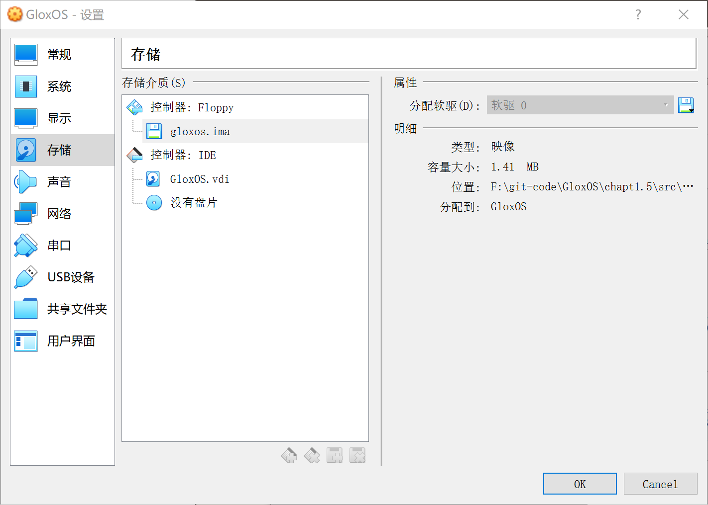
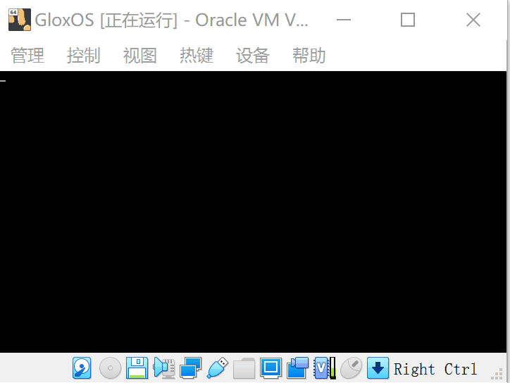

1.5_主引导扇区
文章目录
主引导扇区
[TOC]
工具
首先，需要的工具软件列表：
-
ubuntu19：https://ubuntu.com/download
-
nasm编译器：https://www.nasm.us/
-
vitualbox：https://www.virtualbox.org/
1. 安装ubuntu操作系统
由于windows下很多命令行操作有限制，所以编写OS最好是在Linux系统下进行操作，而ubuntu则是一个不错的选择。目前笔者使用的操作系统是ubuntu19.10。当然了，选择直接在PC上安装还是使用虚拟机，看个人选择了。
如果坚持使用wondows开发也不是不可以，就是有些命令需要自己写，或者找工具代替。后面会顺便提供下windows下使用的替代工具，如果想起来的话。
2. 安装nasm编译器
ubuntu下使用命令安装
sudo apt-get install nasm
3. 安装vitualbox
直接下载deb包并安装即可，最新版本是vitualbox 6.1
主引导扇区
主引导扇区又称为MBR，是操作系统的起点，当计算机启动后，会加载并执行位于硬盘上的第一个扇区做为引导扇区。
1. 主引导扇区格式
-
主引导扇区必须位于硬盘开始位置的512字节。
例如在1.44M软盘上，位于(柱面=0,磁头=0,扇区1)的位置
-
主引导扇区大小必须是512字节。
-
主引导扇区必须是以
0x55, 0xAA为结尾的。
2. 主引导扇区执行过程
主引导扇区由BIOS进行加载并执行。
BIOS系统首先会读取 0 柱面 0 磁道 1 扇区，将其内容加载到内存地址的 0x0000:0x7c00处。然后BIOS跳转到内存的0x7c00处开始执行指令。
至于为什么必须加载到 0x7c00 的地方，当时就这么规定的吧，没啥特殊的地方，计算机读取指令开始时，会从 0x7c00处读取。（其实还是有点特殊的地方，参见http://www.ruanyifeng.com/blog/2015/09/0x7c00.html）
编写一个主引导扇区
下面我们编写一个最简单的主引导扇区，并且在虚拟机中加载运行。
示例代码
创建boot目录，并新建文件boot/boot.asm
|
|
简单解释下上面的汇编代码：
org 0x7c00: 指定一个基地址，用来声明计算程序的偏移地址
jmp Entry：这句是正式开始执行的代码，表示跳转到后面Entry标记的位置执行指令。
db 0x90, db "GLOXBOOT": 填充内容，并无实际作用。不是系统指令，也不会被执行。
jmp $: $ 代表当前行首的地址，所以会一直循环执行此指令。
resb 510-($-$$)： 当前行$至结束(1FE) 之间的内容填充0
db 0x55, 0xaa：填充0x55, 0xaa作为主引导扇区结束标识。
编译代码
使用 nasm 编译器编译 boot.asm 文件
nasm -f bin -o boot.bin boot/boot.asm
然后，使用 linux 命令创建一个1.44M大小，字节都为0的 gloxos.img 镜像文件
dd if=/dev/zero of=gloxos.img bs=1024 count=1440
将引导扇区文件，添加到ratsos.img 镜像中
dd if=boot.bin of=gloxos.img bs=512 count=1 conv=notrunc
创建完成，至于dd命令的用法，自己查找学习，在此不做详述了。
总结，也可以构建完整的 build.sh 执行脚本如下
|
|
在虚拟机中执行
-
使用vitualbox虚拟机
创建一个虚拟电脑，名称为GloxOS
-
加载并运行镜像
使用vitualbox创建一个系统，添加一个软盘驱动器。
添加一个软盘驱动器。
使用软盘驱动器加载镜像文件gloxos.img。

-
启动系统
点击显示运行系统

顺利启动，可以发现进入一个黑屏界面。并且光标一直闪烁。
代码地址 https://github.com/sxt102400/ratsos/tree/master/chapter2.1
文章作者 寒冰
上次更新 2018/10/10